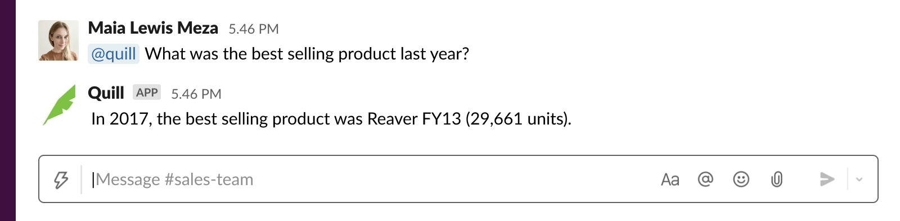
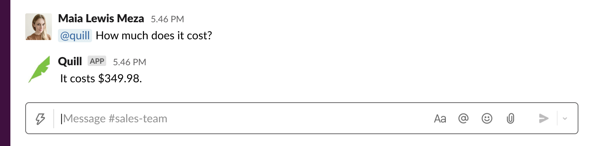
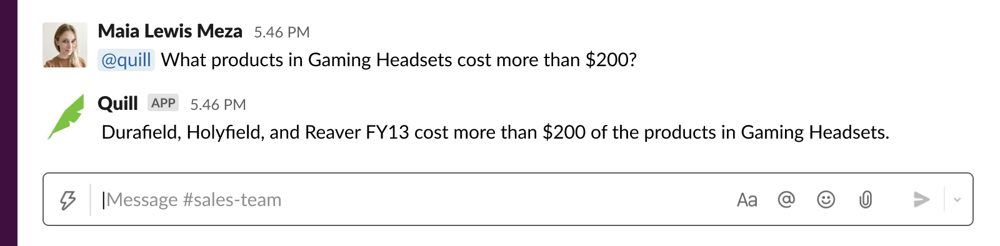
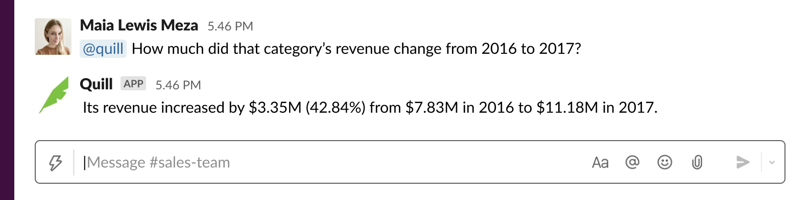

Imagine a friendly conversation with your database
Consider a database of shopping transactions. Within the millions of hypothetical rows, a near-infinite amount of information can be queried. You might simply want to know what dollar amount is associated with a specific transaction ID, or perhaps you just need the billing address. Slightly more complex, you could want to know how many purchases a particular person made in May of last year. Or the average amount associated with transactions made by customers in Chicago, or by Amex cards, or in purchases that included a white sweater.
In a typical organization, the curious party would submit a request with an analyst, who would then—most likely days later—write a SQL query, and return some amount of data that would hopefully answer the question. But what if, instead of needing someone to translate your curiosity into code, you could ask the database directly? What if you could simply ask a question in Slack and get an immediate answer. How would that change how we use data? How would that impact decision making?
These were the questions that inspired our incubation project concept. During my time at Narrative Science, the leadership team initiated a quarterly rotating incubation team, where anyone interested in participating could pitch an idea and, if chosen, have 3 months (part-time) to create a prototype with the support of a four person team. My pitch partner Clayton Norris and I were given the inaugural project.
At the end of the 3 months we presented a live demo, using a real data set from a prospective partner, the existing NLG platform, and a few new pieces of entity recognition functionality.
Demo Highlights
This question demonstrates that Quill 3 can be taught superlatives, and know which data type corresponds with that superlative. In this case "best selling" is associated with the attribute "sales" and points to a field in the data called "amount".
In the above question, the platform tracked the most salient entity in the conversation, identifying that the pronoun "it" in this question refers to "Reaver FY13."
When asked a comparison question, Quill was able to filter to headsets with prices above a threshold.
Finally, Quill determined the intent of this question to be a comparison between two time periods, and is able to provide a summary that includes the absolute difference, percent difference, and revenue amount from each year.
Narrative Science patented the technology, which is now owned by Salesforce, and Slack! The incredible team I worked with: Clayton Norris, Mike Smathers, Nate Nichols, and Dan Platt. The project would not have been possible without the ideas of Andrew Paley and David Huang.